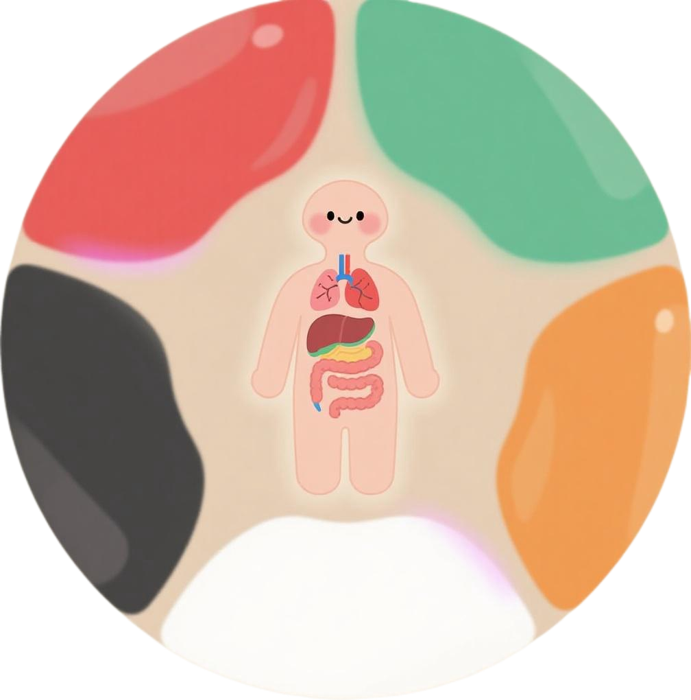
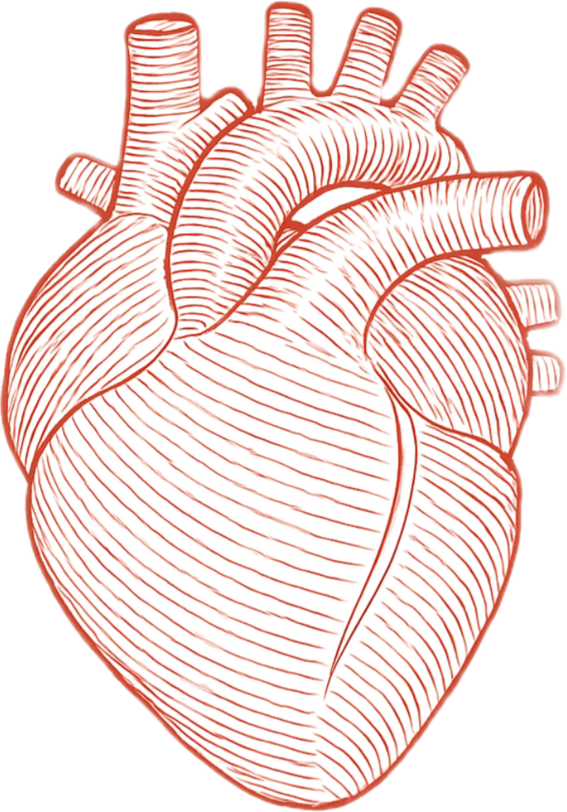
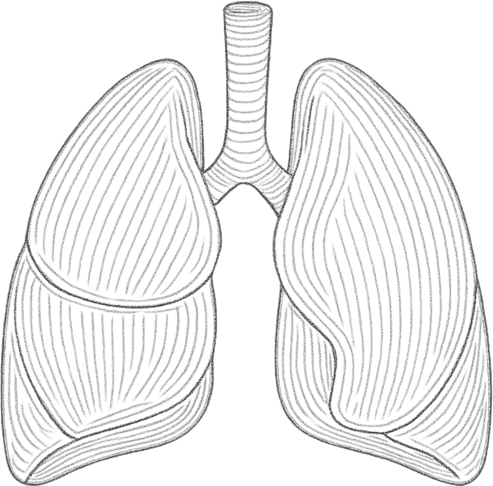
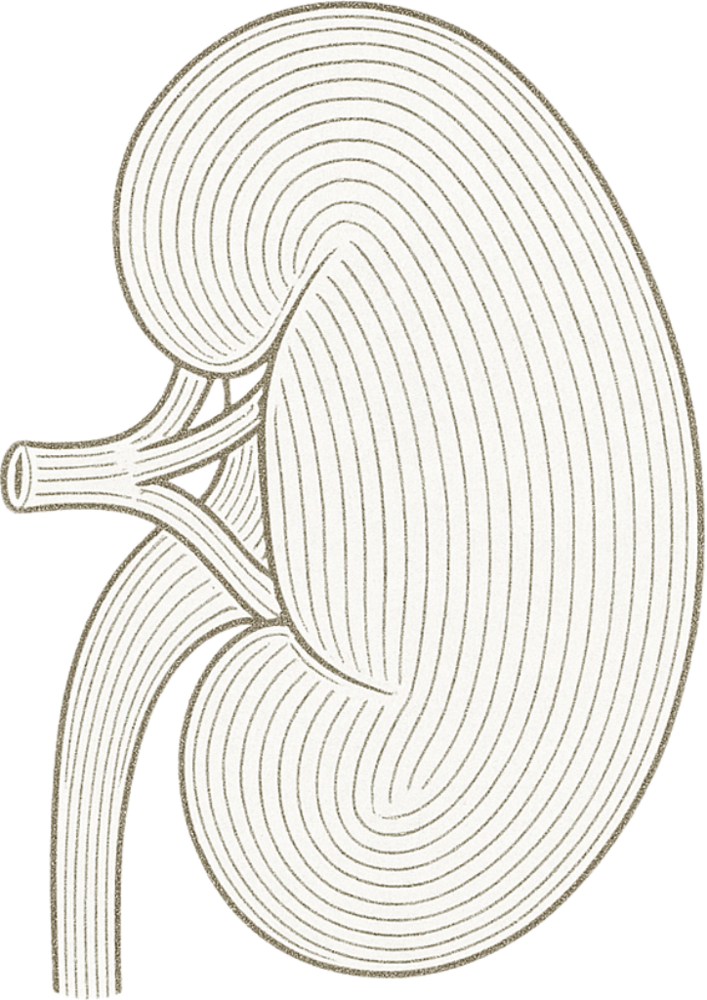
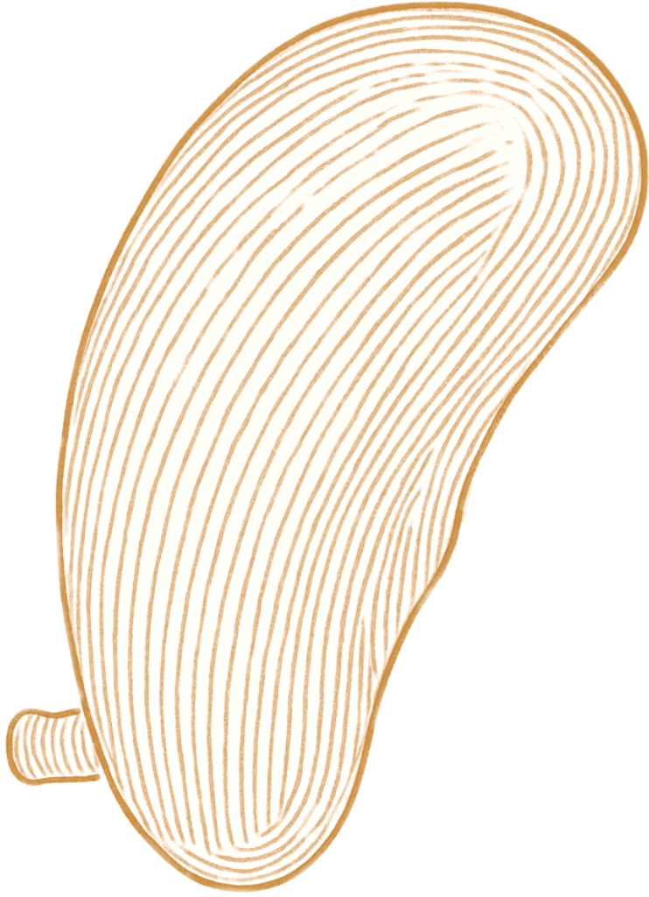
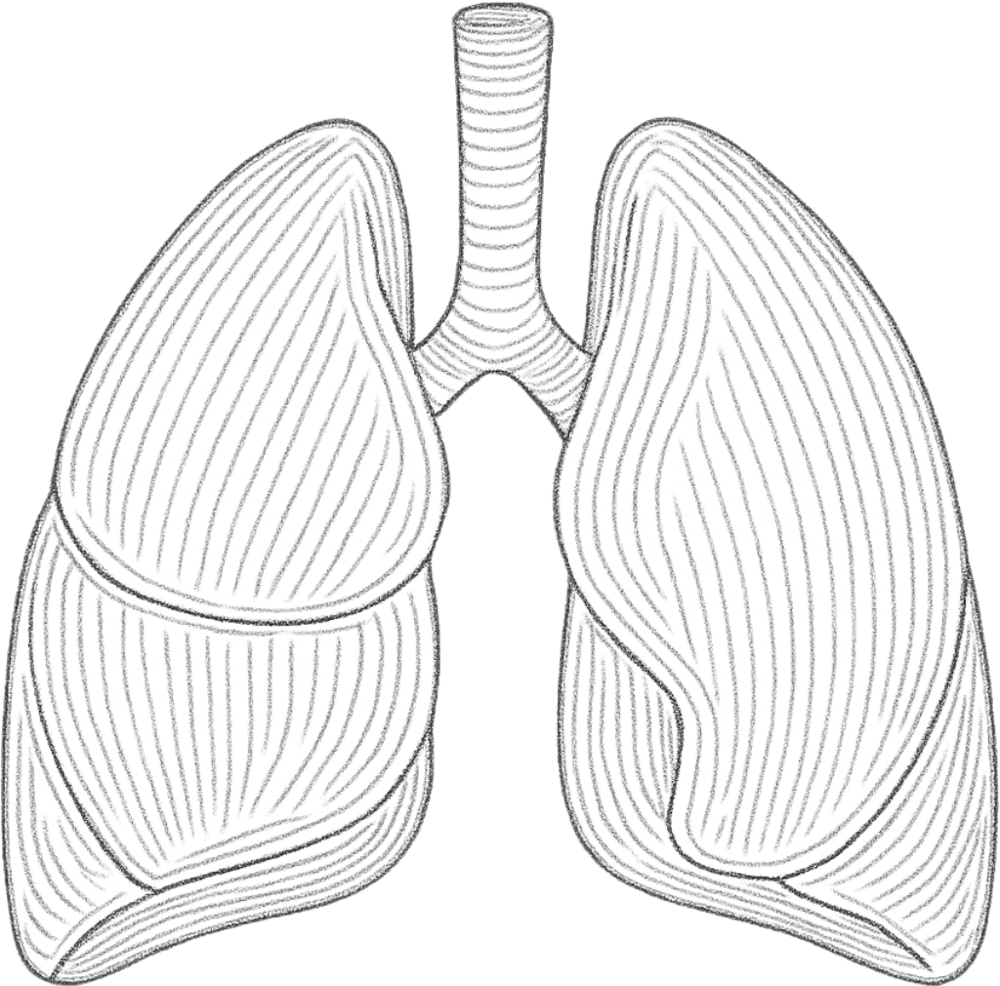
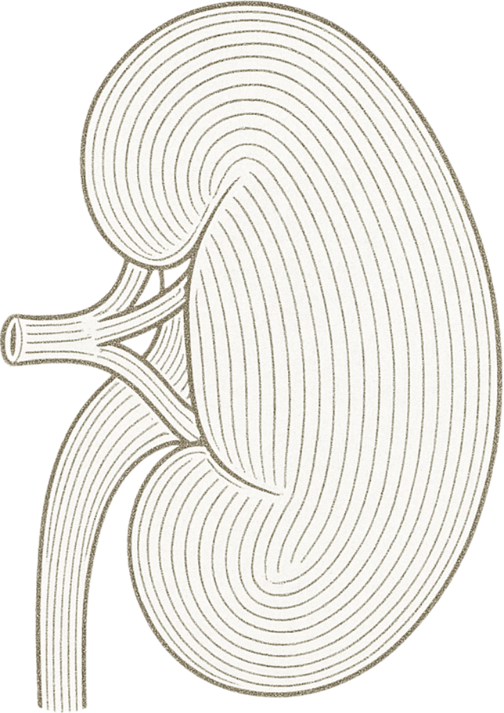
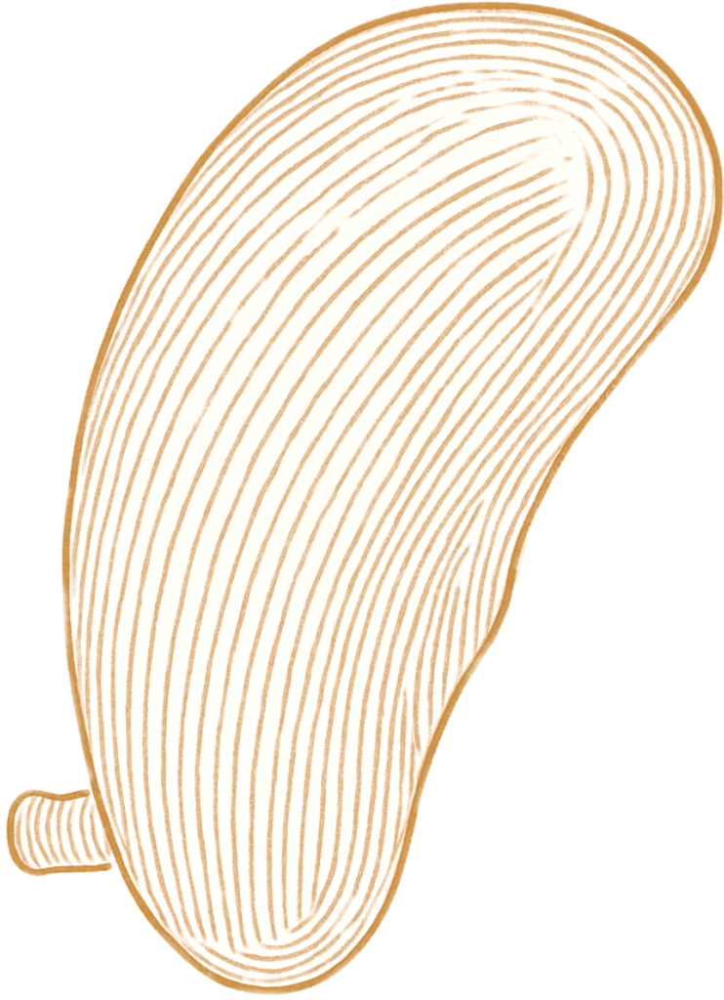
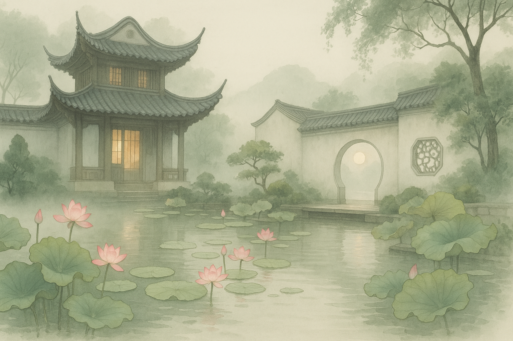

【Emotion】: Joy 【Tone】: Zhi（徵）
The Heart is the emperor of all organs in Traditional Chinese Medicine, governing consciousness and spirit (shen). While joy nourishes the heart, excessive excitement can lead to restlessness and insomnia.The 【Zhi】tone, warm and uplifting, harmonizes with the Heart and is ideal for calming the mind and supporting restful sleep.
【Healing Focus】: Calms the spirit, stabilizes joy, improves sleep.')" alt="HAPPY"> 【Emotion】: Sadness 【Tone】: Shang（商）
The Lungs regulate breathing and are closely connected to grief and sorrow. Lingering sadness can disrupt breathing and weaken vitality. The 【Shang】 tone has a clear, autumn-like quality, perfect for processing grief and regulating the breath.
【Healing Focus】: Helps process grief, regulates breath, restores emotional openness.')" alt="SAD"> 【Emotion】: Fear 【Tone】: Yu（羽）
The Kidneys store essence and govern willpower and inner strength. Persistent fear and insecurity can deplete this energy source. The 【Yu】 tone is deep and tranquil, like flowing water, helping to calm fear and replenish vitality.
【Healing Focus】: Anchors the mind, nourishes energy, dispels fear.')" alt="AFRAID"> 【Emotion】: Overthinking 【Tone】: Gong（宫）
The Spleen is responsible for digestion and focused thought. Excessive thinking and worry can weaken its function, causing fatigue, brain fog, and digestive issues. The 【Gong】 tone is steady and grounded, promoting clarity, mental focus, and emotional stability.
【Healing Focus】: Supports clarity, stabilizes thought, strengthens attention.')" alt="THOUGHT">
The Heart is the emperor of all organs in Traditional Chinese Medicine, governing consciousness and spirit (shen). While joy nourishes the heart, excessive excitement can lead to restlessness and insomnia.The 【Zhi】tone, warm and uplifting, harmonizes with the Heart and is ideal for calming the mind and supporting restful sleep.
【Healing Focus】: Calms the spirit, stabilizes joy, improves sleep.')" alt="HAPPY"> 【Emotion】: Sadness 【Tone】: Shang（商）
The Lungs regulate breathing and are closely connected to grief and sorrow. Lingering sadness can disrupt breathing and weaken vitality. The 【Shang】 tone has a clear, autumn-like quality, perfect for processing grief and regulating the breath.
【Healing Focus】: Helps process grief, regulates breath, restores emotional openness.')" alt="SAD"> 【Emotion】: Fear 【Tone】: Yu（羽）
The Kidneys store essence and govern willpower and inner strength. Persistent fear and insecurity can deplete this energy source. The 【Yu】 tone is deep and tranquil, like flowing water, helping to calm fear and replenish vitality.
【Healing Focus】: Anchors the mind, nourishes energy, dispels fear.')" alt="AFRAID"> 【Emotion】: Overthinking 【Tone】: Gong（宫）
The Spleen is responsible for digestion and focused thought. Excessive thinking and worry can weaken its function, causing fatigue, brain fog, and digestive issues. The 【Gong】 tone is steady and grounded, promoting clarity, mental focus, and emotional stability.
【Healing Focus】: Supports clarity, stabilizes thought, strengthens attention.')" alt="THOUGHT">
Choose a scene


50%